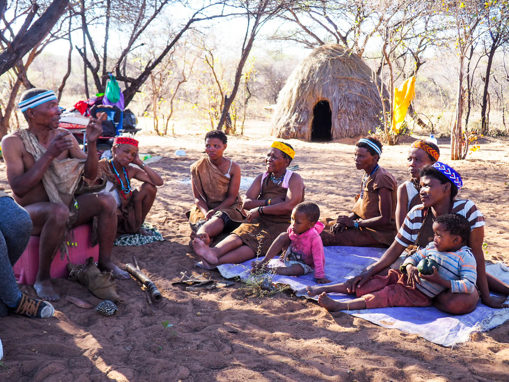
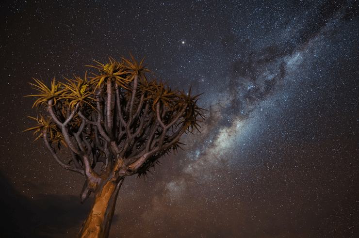
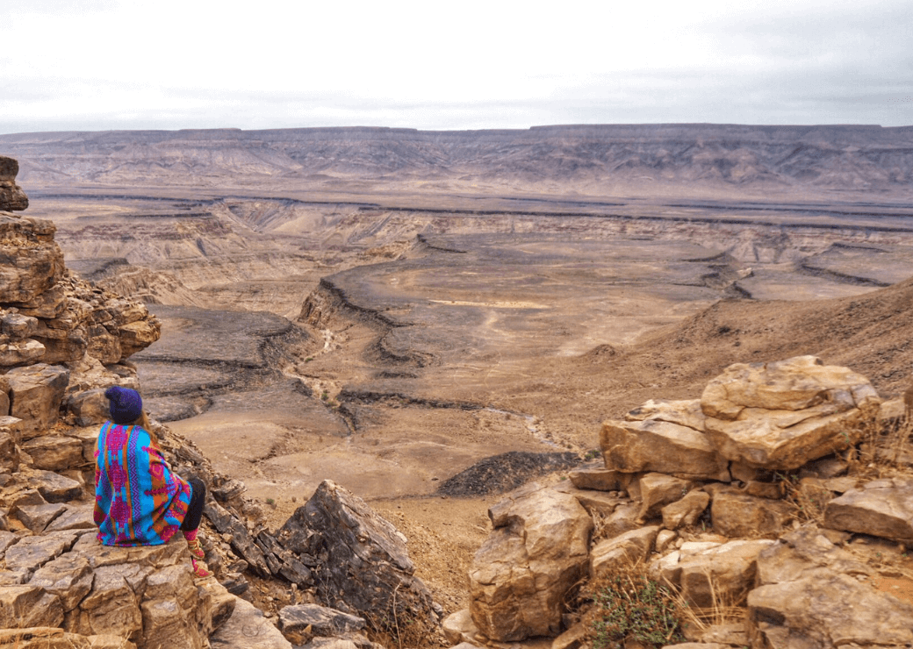
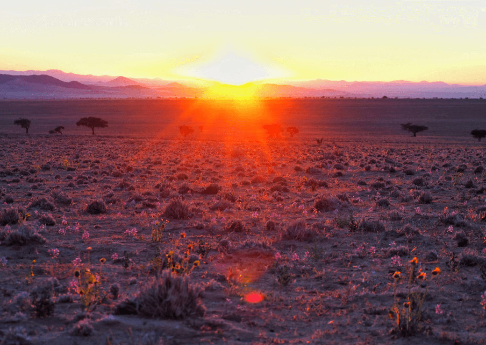
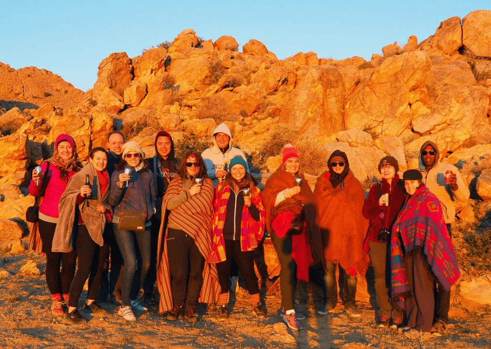

An Epic & Adventurous Namibia Itinerary (Plus Things to See & Do)
10.1.2018
Next country up in my Africa itinerary series is… Namibia!
Namibia is one of the most unusual, fascinating and vast countries I’ve ever been to with other-worldly scenery, ethereal, starry skies, stunning coastlines, colossal sand dunes, vast deserts, incredible wildlife and epic adventure activities!
Namibia has it all!
For the purposes of this Namibia itinerary, I’m going to start and end in the capital Windhoek, which is right in the middle, going around in a loop clockwise as this probably makes the most sense as most people will usually fly in and out of Windhoek if doing a Namibia only trip. However… you can also do this trip in reverse. Or if you are driving in from South Africa, Zambia, Zimbabwe or Botswana, you can easily adjust the itinerary to suit your plans and I’ve suggested a few alternatives below.
If you want to break up the journey down to the south of Namibia, the Kalahari is a great place to spend a night or two.
he Kalahari region of Namibia (and Botswana) is where you have the chance to meet and spend time with the San people, also known as the Bushmen, who are one of the oldest tribal groups in the world and the original inhabitants of southern Africa.
Hanging out with the San was one of the most wonderful experiences I’ve ever had, they were so warm and welcoming and it was fascinating to about their traditional survival skills and customs. I even got healed by a San medicine man and after an afternoon with the San, I’m pretty confident I could survive in the desert for a few days without a fresh water supply – just need to dig up a water plant don’t I? And thanks to my San guides, I know exactly how to do it!
Where To Stay: A good place to stay is the Bagatelle Kalahari Game Ranch and you can organise all your activities through them.
Cool Things To Do: Stargazing, horseback safaris, spend time with the San people or go on game drives.
Time Needed: 1 – 2 Days
Another stop on the way to Fish River Canyon is the Quiver Tree Forest, near to Keetmanshoop in the Karas Region.
Quiver trees are strange, yet beautiful trees and so named because the San Bushmen use them to make their quivers, a container used to hold their arrows and darts.
One of the most incredible and impressive places in Namibia is the awe-inspiring Fish River Canyon, the largest canyon in Africa (disputed but generally accepted) and the second largest canyon in the world, after the Grand Canyon.
If you just want to view the canyon, you can walk along the trail at the top from the start of the Fish River Hiking Trail to the main view point.
Aus is a great place for relaxing, stargazing and admiring the scenery – the mountains and sunsets are incredible.
We didn’t stay in the town itself, but at Klein Aus Vista, a beautiful farm surrounded by the Aus Mountains. Many people visit the area in June and July to see the pretty flowers that bloom around July and august. We just caught the tail end of them this time.
Luderitz is a pretty, German colonial town on the Atlantic coast. There isn’t a lot there and so it easily explored by foot. the main points of interest are Felsen Kirche, an Evangelical Lutheran church, the colourful buildings on Kirch Street and the harbour. We also had a lovely stop for lunch at the lovely Garden Cafe.